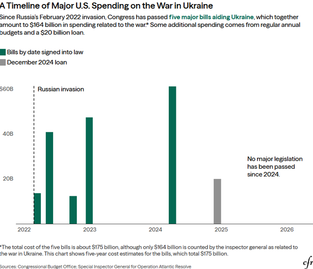

I. Introduction
Five years ago, Vladimir Putin promised a ten-day war. Today, Russia is facing the unthinkable; it is losing to Ukraine, and the world must decide what comes next. The Institute for the Study of War revealed this week that Russian battlefield gains are nearing net zero, while Ukrainian missile capabilities threaten targets deep in the Russian interior. Russia has suffered an estimated 500,000 casualties, and monthly casualty rates have reportedly outpaced monthly recruitment rates since December 2025. Low troop morale, poor equipment maintenance, and continued military attacks from the Ukrainian offensive have contributed to the stagnation of Russia's invasion.1 If Ukraine is to win the war, aid should persist in the form of economic reconstruction, rather than military assistance. Ukraine requires rebuilding and a coordinated international recovery strategy on the scale of the Marshall Plan.
II. The Role of Military Aid
Between 2022 and 2024, the U.S. passed five bills totaling around $175 billion, of which $127 billion went directly to supporting Ukraine. Of that aid, about $70 billion was military support, including weapons and equipment. $53 billion went to budget support and $4 billion to humanitarian aid.2 After President Trump's election, no major legislation had been passed since 2024, until Congress reauthorized the Ukraine Security Assistance Initiative, granting $400 million annually for 2026 and 2027.3 This marked a dip in U.S. spending on military support to Kyiv, prompting European allies to increase aid to make up the difference.

U.S. aid has been instrumental in Ukraine's ability to slow the Russian offensive and eventually gain the upper hand on the battlefield. In 2021, Russia's military budget was approximately $66 billion, while Ukraine's paled in comparison: just $6 billion. In 2023 alone, the U.S. provided Ukraine with $31.7 billion in direct military aid, including basic defense capabilities and more expensive systems to give it an upper edge. While this aid accounted for only 0.12% of U.S. GDP, it was nearly five times Ukraine's total military budget before the war.4 It is clear why U.S. and European military aid has been essential to Ukraine's persistence throughout the war.
III. Economic Reconstruction
Ukraine's battlefield position now raises a more consequential question than whether or not it can win. If Ukraine can continue to retake lost territory and pressure Russia through its counteroffensive campaigns, what will victory look like? The Council on Foreign Relations and the World Economic Forum have begun examining what an economic reconstruction plan for Ukraine would entail. The goal would be to integrate Ukraine into the European economy, considering the possibility of EU membership and NATO integration. However, the country faces many challenges due to losses from the war, preexisting corruption, and stagnating economic growth. U.S. aid would have to account for and adapt to these challenges.
IV. A Framework for Reconstruction
Labor
CFR focuses recovery on three key things: labor, capital, and stability. First, labor refers to Ukraine's long-term demographic collapse that predates the war. The population has declined by about 20% since gaining independence from the Soviet Union in 1991. This problem became an existential threat during the war, with over 6.5 million refugees fleeing the country and 3.3 million internally displaced people.5 This creates a problem known as "brain drain," in which there is not enough skilled labor to support the country's economy. Policy should incentivize external refugees to return to Ukraine. This is known as the army of recovery, a policy framework aimed at reducing living costs and increasing economic productivity.6
Capital
Next is Ukraine's lack of capital to support its energy sector and rebuild infrastructure destroyed during the war. European nations have already begun capital transfers to Ukraine, but this is not sufficient. International Financial Institutions need to stabilize distressed firms in critical sectors, with a particular focus on the private and banking sectors. The goal is to incentivize foreign investment into the country, which cannot happen unless infrastructure is restored and the economy is stabilized. This is why military aid is so crucial: the Russian military is targeting energy and gas infrastructure, so the sooner the war ends, the more likely Ukraine is to emerge from it with a salvageable economy. Economic action should begin right now with domestic policies that deregulate the economy and stabilize the macroeconomy, and the reconstruction of the energy sector. 55% of energy infrastructure has already been restored, helping limit power outages for Ukrainians while the war continues.7
Stability
Finally, Ukraine needs to be stabilized both economically and politically. A major step would be pegging the Ukrainian Hryvnia to the euro, which is backed by international reserves. This would signal a major step in integrating Ukraine's economy into the EU and would cost roughly $16 billion. Furthermore, Ukraine's economic development has long been undermined by government corruption. Ukraine ranks 104th out of 180 countries in Transparency International's Corruption Perceptions Index, but has shown measurable improvement in the last decade, rising by over 40 places since 2013. Capital transfers should be directed to funding anti-corruption watchdogs, and policy should mandate public reporting of all Ukrainian government expenditures.8
V. Conclusion: Why Should the U.S. Invest?
The World Bank estimates that full economic restoration of Ukraine would cost about $540 billion.9 Many experts have called for a new Marshall Plan for Ukraine, urging the application of the lessons of the 1947 plan to a postwar plan for Ukraine. Like the Marshall Plan, Ukraine's recovery will require contributions from many nations and the prioritization of investment in the private sector. Similarly, it will necessitate rebuilding energy and gas infrastructure impacted by the war. However, it differs from the Marshall Plan in that reconstruction will occur alongside an active anti-corruption reform. In contrast, Britain, France, and Germany were primarily bureaucratic during the post-WWII era.
If the U.S. and its allies are to devote half a trillion dollars to Ukraine's reconstruction, they must enforce anti-corruption initiatives to ensure proper spending. They must also understand the context: Ukraine has the natural resources and population to become wealthy, but this will not be possible unless refugees are repatriated and the economy is stabilized. This can be done through the army of recovery and gradual admission into the EU free movement of persons and trade.10 While the $540 billion figure makes recovery seem like an additional purchase, the reality is that it can be achieved efficiently through proper cooperation and strategic policies. Putin assumed that the West would give in to a 10-Day Special Military Operation. Instead, as the long war nears its end, reconstruction presents an opportunity not only to demonstrate that Western power supersedes Russian aggression but to build a Ukraine wealthier and more integrated into the Western world than ever before.
Bibliography
- Institute for the Study of War, "Ukraine's Intermediate-Range Strike Campaign and New Mechanized Attacks Herald the Start of a New Phase of the War," UnderstandingWar.org, accessed May 31, 2026, https://understandingwar.org/research/russia-ukraine/ukraines-intermediate-range-strike-campaign-and-new-mechanized-attacks-herald-the-start-of-a-new-phase-of-the-war/.
- Council on Foreign Relations, "Here's How Much Aid the United States Has Sent Ukraine," last modified 2025, https://www.cfr.org/articles/how-much-us-aid-going-ukraine.
- "US Senators Press Hegseth on Delayed $400 Million Aid Package for Ukraine," Yahoo News, accessed May 31, 2026, https://www.yahoo.com/news/politics/articles/us-senators-press-hegseth-delayed-045755961.html.
- Council on Foreign Relations, "Here's How Much Aid the United States Has Sent Ukraine."
- Charles Becker et al., "Rebuilding Ukraine: Priorities and Strategies," Council on Foreign Relations, February 2025, https://www.cfr.org/reports/rebuilding-ukraine.
- World Economic Forum, WEF Session on Ukraine War, Outlook and Reconstruction, video, World Economic Forum, 2023, https://www.youtube.com/watch?v=nIrkIKNcJGY.
- World Economic Forum, WEF Session on Ukraine War, Outlook and Reconstruction.
- Becker et al., "Rebuilding Ukraine."
- World Economic Forum, "What Would a Marshall Plan for Ukraine Look Like?" March 2023, https://www.weforum.org/stories/2023/03/marshall-plan-for-ukraine/.
- World Economic Forum, "What Would a Marshall Plan for Ukraine Look Like?"